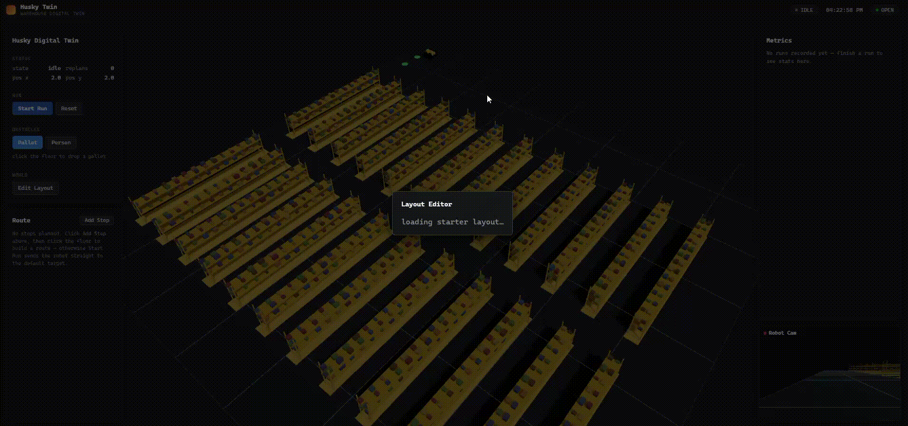

/health every 14 minutes.
If it's gone quiet, the first load may take a few extra seconds to wake up. Run history also resets on every backend deploy/restart.
A single-robot, browser-native 3D digital twin of a warehouse Husky — real-time tracking, multi-stop routes, live obstacle replanning, a configurable warehouse layout editor, persistent run history with a metrics dashboard, and an onboard robot camera feed. No ROS, no physics simulator: a deterministic Python asyncio tick loop synced live to a React Three Fiber scene over WebSocket.

A deterministic backend tick loop drives the simulation state; the frontend renders it live over WebSocket.
Alongside the primary /ws WebSocket channel, the backend exposes:
| Route | What it does |
|---|---|
| GET /health | Liveness check |
| GET /runs?limit=50 | Run history, newest first |
| GET /runs/stats | Aggregate stats for the metrics dashboard |
| GET /runs/{run_id} | A single stored run report |
| GET /layouts | Saved layout summaries |
| GET /layouts/starter | A freshly generated layout, to seed the editor |
| POST /layouts | Save a new layout |
| POST /layouts/{id}/activate | Hot-swap the running sim onto a saved layout — no redeploy needed |
backend/app/schema.py (Pydantic) and frontend/src/schema/types.ts are kept in sync by hand as the single source of truth for the WebSocket wire format — simple enough for a solo project to maintain without a codegen pipeline.POST /layouts/{id}/activate lets the layout editor push a saved warehouse layout onto the live running simulation, so different scenarios can be tried without restarting the backend.VITE_WS_URL env var that also derives the REST base URL.Full backend + frontend source, deployment config, and setup instructions.
View on GitHub 🚀 Live Demo ← Back to Projects